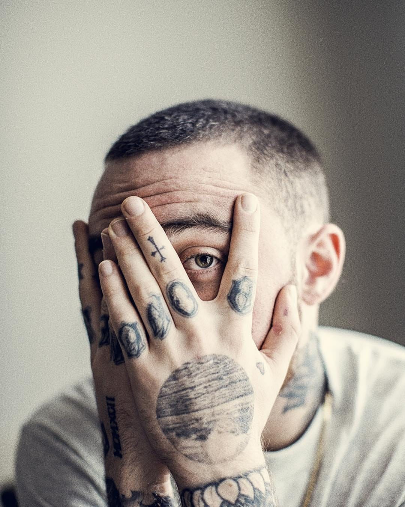

Rapper · Pittsburgh, Pensilvânia
Malcolm James McCormick, conhecido pelo mundo como Mac Miller, nasceu e cresceu em Pittsburgh, Pensilvânia — uma cidade que moldou profundamente sua visão de mundo e seu estilo musical. Aos 15 anos, já participava ativamente da cena Cipher local, aperfeiçoando seu craft antes mesmo de ter a atenção do mundo.
Em 2010, Mac lançou a mixtape que colocou seu nome no mapa nacional: K.I.D.S (Kickin' Incredibly Dope Shit). O projeto, distribuído gratuitamente, viralizou e revelou um artista com voz própria. A faixa-título do projeto se tornaria um hino de uma geração inteira.
Após K.I.D.S, veio Best Day Ever, e então seu álbum de estreia em uma major label: Blue Slide Park, que chegou ao topo das paradas americanas. A carreira de Mac foi uma jornada de amadurecimento constante — de um jovem animado de Pittsburgh a um músico profundo e introspectivo.
Mac Miller faleceu em setembro de 2018, deixando um legado inestimável de honestidade artística, vulnerabilidade e talento genuíno que continuam a inspirar artistas e fãs ao redor do mundo.